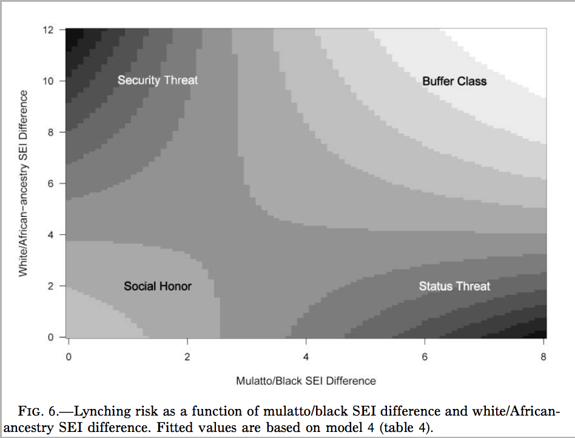

Pretty Pictures
One of the best features of R is the ability to make beautiful graphs. R gives the user an incredible amount of control over exactly how your graphs appear. If you know enough, you can virtually make any graph that you can imagine in your head. This flexibility comes at a cost, however. The curve in learning graphics is quite substantial, because of the number of parameters that can be controlled. Nonetheless, if you intend to do quantitative data analysis, then its well worth the effort. In my opinion, figures are almost always a better way to express a result than a table. If the figure is well-designed it will make your results much more intelligible to a broader audience because you have literally helped them to visualize it.
In this lab, I am going to show you two techniques for plotting in R. First, I am going to show you how to plot things in R using the basic plotting functions, sometimes called “base plot.” Base plotting in R gives you full control over pretty much everything you could want to stick on a canvas, but sometimes it gives you too much control and you can end up fiddling around a lot to get things to look just how you want them to. So, I am also going to show you how to plot in R using the ggplot2 library. ggplot has become so popular as a method of plotting that many people prefer it to base plot. The “gg” in ggplot refers to teh “graphics of grammar.” The basic idea of ggplot is that rather than control everything about your plot, you give R a “grammar” of what data you want to graph, how you want to graph, and how you want to tie aesthetics to the different pieces of data. In future versions of this course, I plan to transition many of the graphs we use to ggplot although most slides are still written in base plot.
There are two different ways you should use pictures in your work. The first method is to use figures to visualize what you data looks like. This is what we have been learning already in class. Histograms, barplots, boxplots, and scatterplots are all examples of trying to visualize your data. Most work on how to make figures is devoted to the topic of visualizing your data like this. However, there is a second way to use pictures, which I think is actually equally important and under-utilized. You can use figures to vizualize your findings. The difference here might not be immediately obvious, partly because we haven’t talked about “models” yet, which is the primary way that results are expressed in quantitative work. Let me give you an example from my own work that may help to communicate what I mean. Here is a figure from an AJS article that shows how to think about the results of a model I ran that tries to predict the number of lynchings in a county by the inequality in occupation between individuals classified as black and mulatto and the inequality between individuals classified as white and mulatto or black (i.e. “African ancestry”).

This is a heat (or topological) map of risk where dark areas indicate greater risk (of lynching). The point was to show that the effect of each variable produces opposite effects depending on the level of the other variable. I am not describing data here, but rather the results of a model of lynching risk that is based on the underlying county-level data.
Since we don’t know much about these types of models yet, we will focus for now on using graphs to describe data. The data we will look at come from one of my current projects. In this project, my colleague (Nicole Marwell) and I have data on social service contracts awarded by the City of New York to non-profit organizations working within the city. The data I am using here are created by aggregating all the money allocated to a particlar health area (a bureaucractic neighborhood boundary in NYC) between the years of 2009 and 2010. We combine that data with data on the poverty rate for each health areas and also divide by the population in a health area to get an estimate of the social service funding per capita. Here is a peak at what the data look like:
head(nyc)## health_area amtcapita poverty unemployed income borough popn
## 1 10110 29.168592 22.77850 11.324410 40287.02 Manhattan 27983.43
## 2 10120 109.451055 22.62417 10.179587 43266.45 Manhattan 20235.00
## 3 10210 216.306532 30.08883 11.616439 29015.87 Manhattan 28688.00
## 4 10221 29.148974 27.16760 17.279031 33987.68 Manhattan 27161.08
## 5 10222 2.422527 12.10421 8.580756 66350.84 Manhattan 13372.73
## 6 10300 506.985063 27.39747 13.606836 32591.55 Manhattan 16035.99We have the numeric code of the health area, the amount of funding per capita, the poverty rate as a percentage of the population, a numeric code for borough (Manhattan, Brooklyn, Bronx, Queens, Staten Island), and the population size. You can download this data in the files section of Canvas.